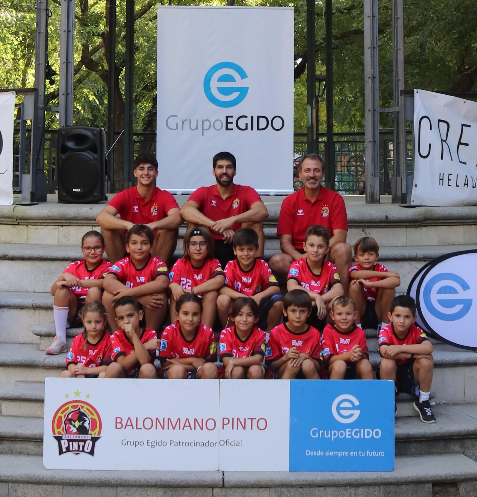

📅 Horarios de Entrenamiento
Martes: 17:00 a 18:15 Pabellón Alberto Contador (Pinto)
Jueves: 17:00 a 18:00 Pabellón Alberto Contador (Pinto)
🏆 Competición
Liga escolar mancomunada (Getafe-Pinto-Móstoles-Villaviciosa)
👨🏫 Técnicos
Rubén Rebollo, Jaime Rebollo y Andrés Servant
👥 Número de jugadores
17